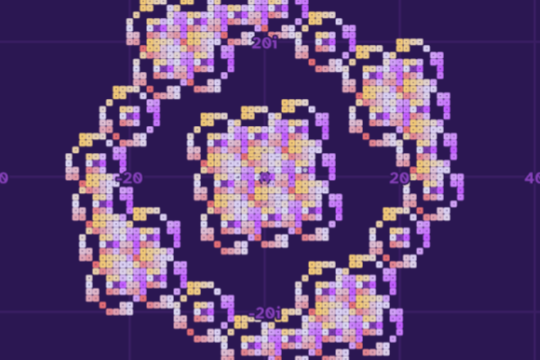
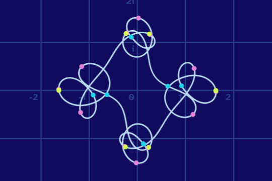
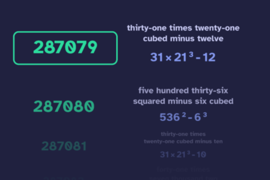
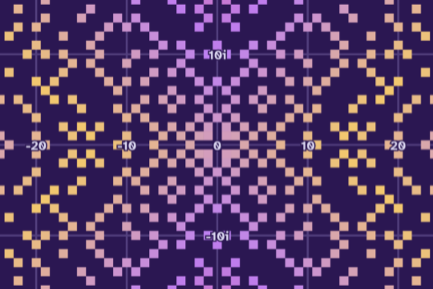
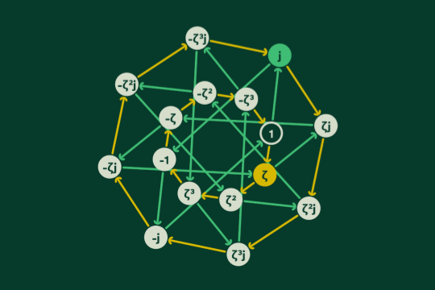
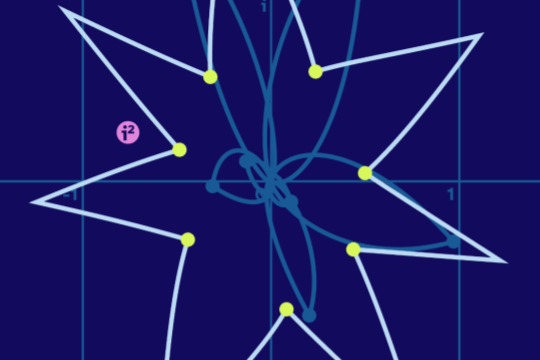
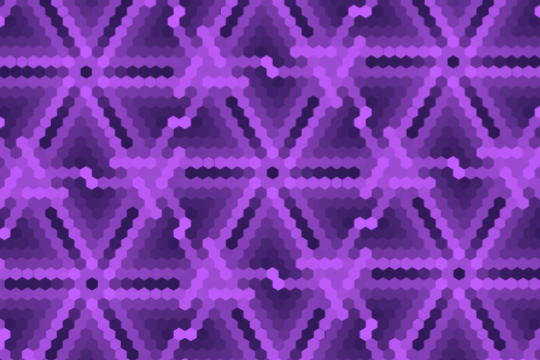

fractals emerge from imaginary systems, such as base i-2

what if we make equations with shapes instead of numbers?

using arithmetic to make number names more efficient

prime factorizations in the complex numbers and other 2D systems

interactive group tables and Cayley diagrams

an exploration of how graphs change if we redefine imaginary numbers

the satisfying behavior of exponents in modular hexagonal systems
shades from a coral reef, or perhaps from a floral leaf?
I'm TheGrayCuber, a creator of videos and webpages that explore math. My creations prioritize fun and excitement over precision and detail. Check out my most recent video, or some of my favorite videos, or a random video!
My videos are made in a custom program. I create slides, which auto-animate between each other. Complicated visuals can be added by writing code, and parameters can be added to each slide, to animate between different settings of the visual.
I am working to make the program more stable and user-friendly, with the intent to open-source whenever that is done. The goals are accessibility, customization, and beauty.
Despite my name, I don't actually use much gray. My works are color-coded by topic to help viewers find related content and to spare myself the boredom of only one theme. The categories are roughly:
Of course, this applies primarily to videos. Each webpage will default to its category, but you can change to whichever scheme you prefer. You can even create your own custom scheme here on the 'palette' tab of my home page!
I mainly use p5js, a fantastic JavaScript library made for visual programming. If you have never written code before, I recommend trying it out :)
There is a great community on the site OpenProcessing. You can browse programs from other creators to learn, to find inspiration, and even to play around with their code and make your own version. Some places you can start:
What should this section even say? I am an ape who enjoys math and programming.
Trying to find the balance between studying existing knowledge, and exploring new ideas.
Trying to find the balance between thoughtful design, and careless fun.
Trying to find the balance between appreciating computers, and appreciating birds, squirrels, worms, fish, and all the other beings.
made with love, and without AI
leave a tip to support my future creations :)
view the code behind this website